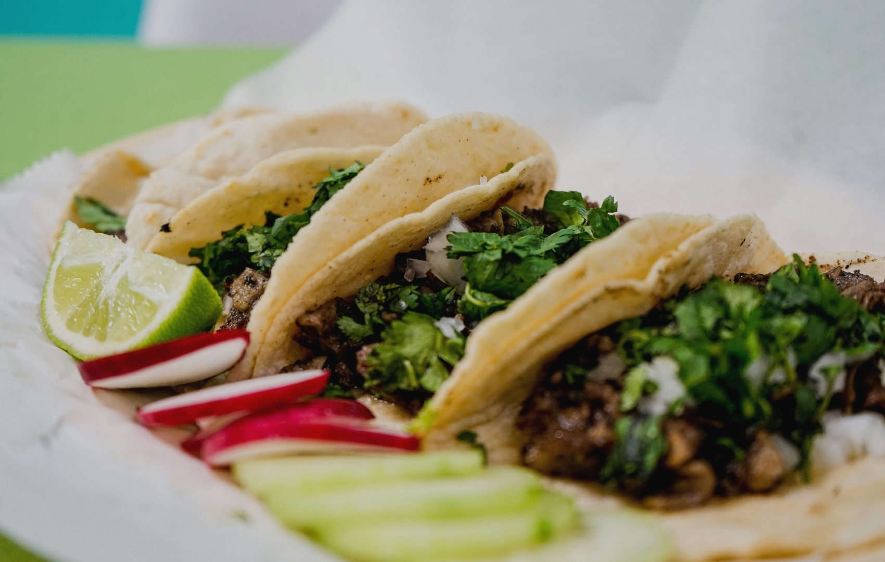
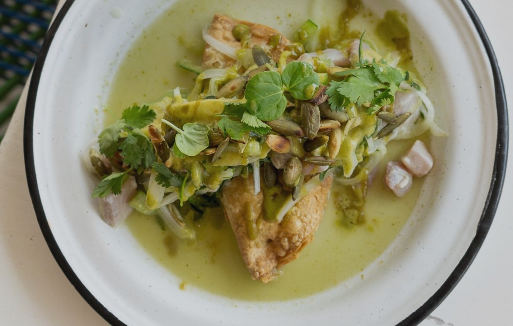
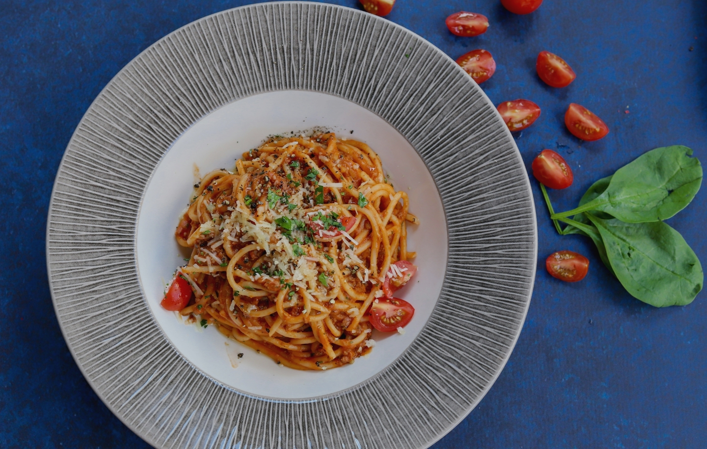

|
TACOS JUNIOR
El favorito de los locales
Restaurante familiar, tacos auténticos,
ingredientes frescos
y ambiente relajado. Tu parada obligada después de la playa.
Dirección: QJ4F+96, 63732 Cruz de Huanacaxtle, Nay.
322 318 3103 Facebook
|

|

|
MAKAI
Mariscos
Del mar a tu mesa. Makai ofrece mariscos frescos, cocteles creativo, Brunch, Bebidas.
Opciones vegetarianas, Opciones veganas
Perfecto para el calor y despues de surf en la lancha.
Dirección: Carretera Punta de Mita km 15 Oxxo,
Punta de Mita 63730 México
52 33 1156 0091 Redes sociales
|
|
MEZZOGIORNO
Cons vista al mar
Auténtica cocina italiana, pasta fresca y vinos selectos, todo con vista al mar. Mezzogiorno es una experiencia culinaria imperdible junto a la playa de Bucerías, recuerda reservar.
Menú
Abierto hasta las 23:00
Dirección: Av Pacífico 33, Centro, 63732 Bucerías, Nay.
52 329 298 0350
|

|